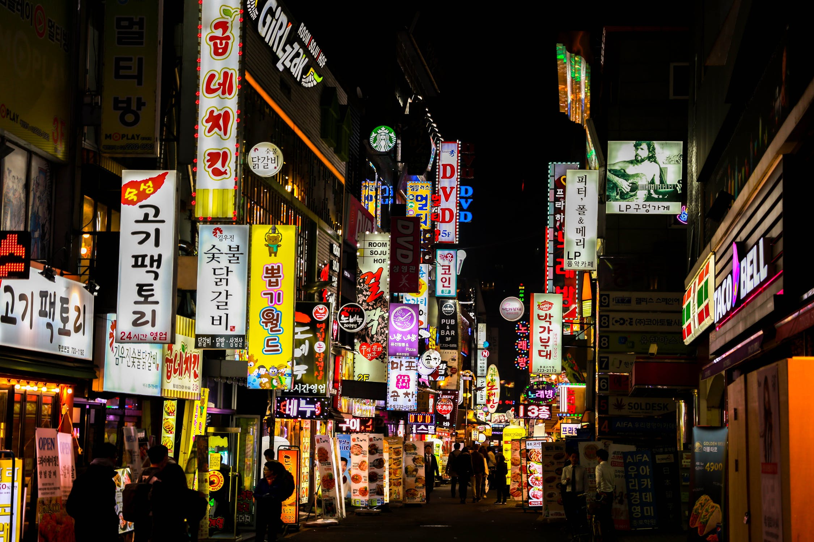
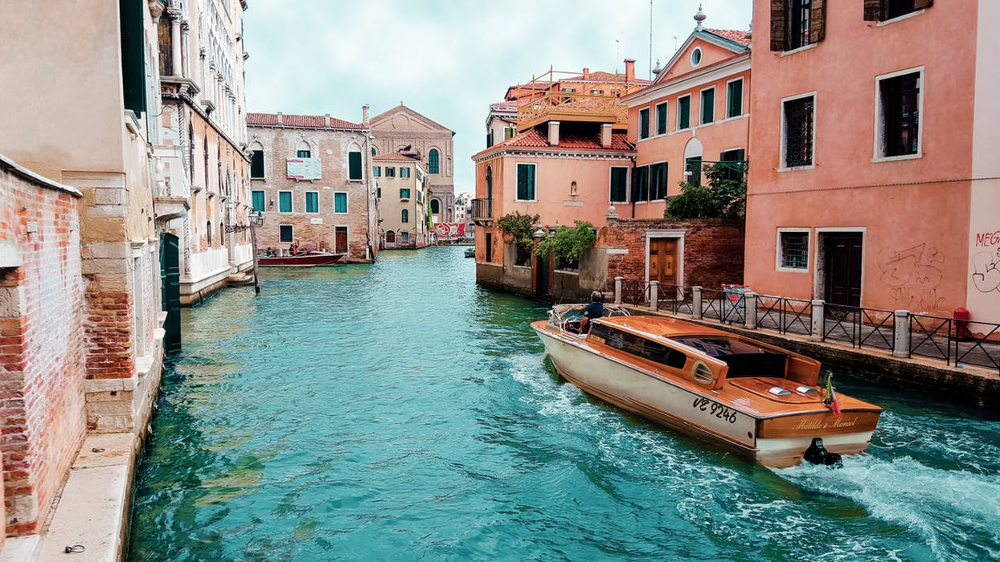
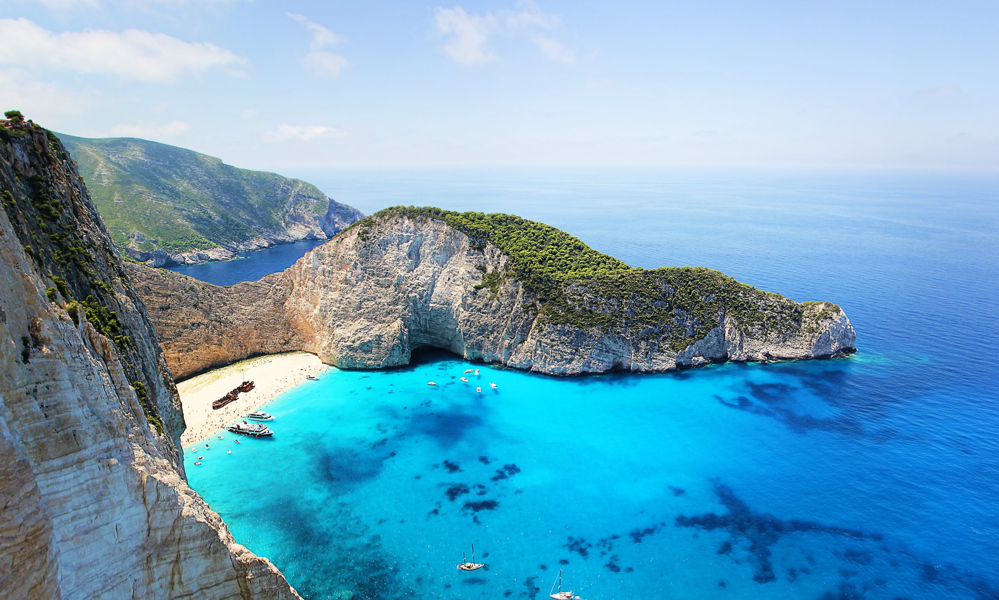

1. South Korea

South Korea, an East Asian nation on the southern half of the Korean Peninsula, shares one of the world’s most heavily militarized borders with North Korea. It’s equally known for its green, hilly countryside dotted with cherry trees and centuries-old Buddhist temples, plus its coastal fishing villages, sub-tropical islands and high-tech cities such as Seoul, the capital.
2. Italy

Italy, a European country with a long Mediterranean coastline, has left a powerful mark on Western culture and cuisine. Its capital, Rome, is home to the Vatican as well as landmark art and ancient ruins. Other major cities include Florence, with Renaissance masterpieces such as Michelangelo’s "David" and Brunelleschi's Duomo; Venice, the city of canals; and Milan, Italy’s fashion capital.
3. Greece

Greece is a country in southeastern Europe with thousands of islands throughout the Aegean and Ionian seas. Influential in ancient times, it's often called the cradle of Western civilization. Athens, its capital, retains landmarks including the 5th-century B.C. Acropolis citadel with the Parthenon temple. Greece is also known for its beaches, from the black sands of Santorini to the party resorts of Mykonos.